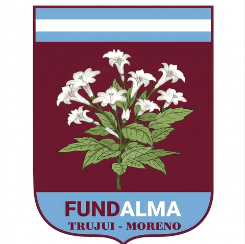

Desde 1991 trabajamos por la cultura de la diversidad. Nivel Inicial, Primario, Secundario y Educación Especial en una misma comunidad educativa: Trujui, Moreno.
Novedades administrativas
Aranceles vigentes y pre-inscripción para el ciclo 2027 ya disponibles.
Acompañamos a cada alumno en cada etapa de su formación, con propuestas pedagógicas que ponen la diversidad en el centro.
La escuela inicial Juana Azurduy, fundada en 1994, recibe a los más chicos con una propuesta lúdica, afectiva y estimulante.
4 secciones Ver información y fotos →La escuela primaria Juana Azurduy recibe hoy a 540 alumnos. Formación sólida con inclusión de la diversidad como eje.
18 secciones · 1° a 6° Ver información y fotos →La Escuela Secundaria Juana Azurduy ofrece la orientación en ciencias sociales y acompaña la trayectoria educativa de 198 estudiantes.
6 secciones · Turno mañana Ver información y fotos →Escuela de Educación Especial que funciona articulada con todos los niveles, bajo el principio “Un mundo para todos”.
Educación Especial Ver información y fotos →Entendimos que lo normal de la vida es la diferencia y que en ello radica su mayor riqueza. Son las diferencias las que nos permiten constituirnos como seres únicos y valiosos.

Nuestra historiaFundalma se constituye el 13 de junio de 1991 para comprometerse con la cultura de la diversidad.
Nuestro camino se inició con la creación de la Escuela de Educación Especial “La Casa de María”, para cobijar y educar a chicos con necesidades especiales de aprendizaje. El trabajo diario nos enseñó que la dicotomía normal vs. especial no presenta fronteras tan netas como es habitual creer.
Nuestro proyecto fundacional apunta, respondiendo al lema “Un mundo para todos”, a poner en marcha estrategias y metodologías en todos los ámbitos de la vida para construir la cultura de la diversidad, frente al monolítico modelo educativo tradicional.
Nuestras escuelas llevan el nombre de una figura femenina emblemática: creyó en sus ideales, se apartó de los mandatos de su época y nos dejó como lección que todos valemos.
Leer la historia completa →Fomentamos la vinculación proactiva de nuestros jóvenes con la comunidad y fortalecemos su sentido de pertenencia a través de proyectos solidarios.
Ver proyectos solidarios →Accedé a los recursos educativos de cada nivel desde cualquier dispositivo.
La pre-inscripción para el ciclo lectivo 2027 está abierta. Completá el formulario y nos contactamos a la brevedad.
✦ Formulario de pre-inscripciónCentral telefónica: (011) 7079-9020
Interno 401 · 11-3877-5820
administracion@fundalma.org.ar
📍 Virgen de Luján 3770, Trujui, Moreno
Interno 202 · 11-6166-4098
📍 Virgen de Luján 3770, Trujui, Moreno
Dirección int. 301 · Preceptoría int. 302
📍 Boulogne Sur Mer 3640, Trujui, Moreno
Dirección int. 101 · Gabinete int. 102
11-5489-6442
📍 Virgen de Luján 3765, Trujui, Moreno
Se abre WhatsApp con el mensaje listo para enviar a Administración.